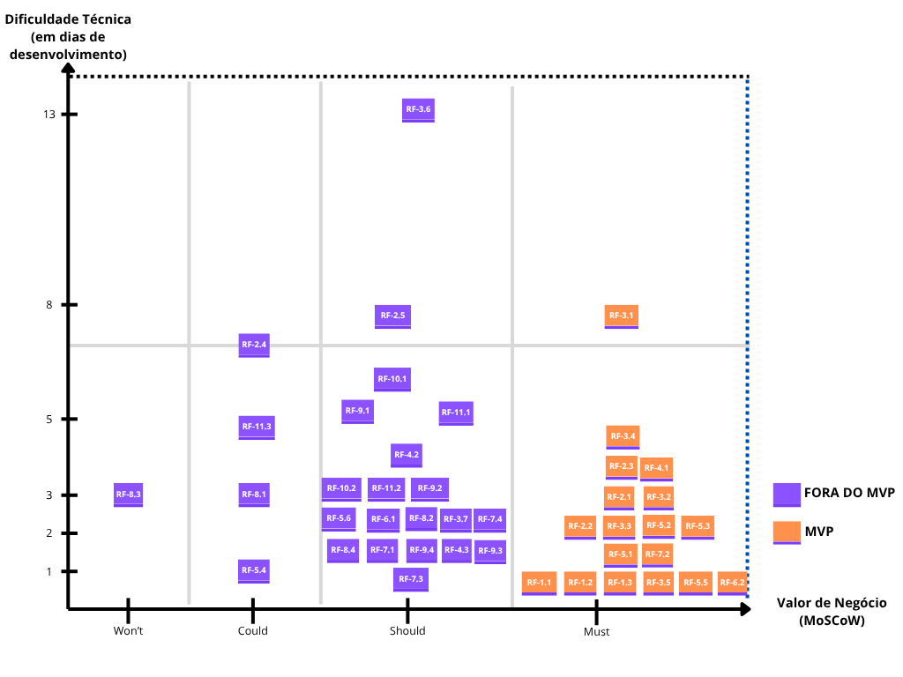

9. Backlog do Produto
9.1 Backlog Geral com Priorização e MVP
Na etapa de priorização do Backlog do Produto, a equipe utilizou o Método MoSCoW, conforme a abordagem delineada por Clegg e Barker (1994). Este método permitiu que o Product Owner classificasse cada requisito funcional, atribuindo um valor de negócio que guia o desenvolvimento do MVP e as iterações subsequentes. A complexidade técnica foi estimada pelos membros da equipe utilizando o método Planning Poker (média da votação de cada membro sobre a complexidade técnica daquele requisito) descrito em mais detalhes por Mike Cohn (2006). Os requisitos funcionais do projeto são definidos através de User Stories, seguindo a prática do XP, que são agrupadas em Épicos para organizar as funcionalidades maiores e o fluxo de desenvolvimento, conforme recomendado pelo Extreme Programming (EXTREME PROGRAMMING, [s.d.]).

| Tema Associado | Épico Associado | Código | Nome | Descrição | História de Usuário | Valor (MoSCoW) | Complexidade (PP) | Objetivo Específico Associado | Critérios de Aceitação | MVP |
|---|---|---|---|---|---|---|---|---|---|---|
| Tema 01: Configuração de Usuários e Papéis | Épico 01: Gestão de Organizações | RF-1.1 | Cadastro de Organização | Permitir o cadastro de novas Organizações com nome, logo e proprietário. | Como Administrador quero cadastrar Organizações com nome, logo e Proprietário para que cada organização utilize o CRM de forma separada. | Must | 5 | OE-09 Permitir a gestão de operações de vendas complexas e descentralizadas |
|
X |
| RF-1.2 | Edição de Organização | Permitir a edição das informações de Organizações existentes. | Como Administrador quero editar as informações das Organizações existentes para correções ou atualizações. | Must | 1 | OE-09 Permitir a gestão de operações de vendas complexas e descentralizadas |
|
X | ||
| RF-1.3 | Exclusão de Organização | Permitir a exclusão de Organizações e todos os seus dados associados. | Como Administrador quero excluir Organizações existentes para correções, exclusão dos seus dados e usuários. | Must | 1 | OE-09 Permitir a gestão de operações de vendas complexas e descentralizadas. | X | |||
| Épico 02: Gestão de Usuários da Organização | RF-2.1 | Cadastro de Usuários | Permitir que o Proprietário cadastre novos usuários em sua Organização. | Como Proprietário quero cadastrar usuários em minha Organização para que minha equipe possa acessar e utilizar o sistema. | Must | 3 | OE-09 Permitir a gestão de operações de vendas complexas e descentralizadas. | X | ||
| RF-2.2 | Edição de Usuários | Permitir que o Proprietário edite as informações dos usuários de sua Organização. | Como Proprietário quero editar as informações dos usuários em minha Organização para correções ou atualizações. | Must | 1 | OE-09 Permitir a gestão de operações de vendas complexas e descentralizadas. | X | |||
| RF-2.3 | Exclusão de Usuários | Permitir que o Proprietário exclua usuários, com transferência de leads. | Como Proprietário quero excluir usuários de minha organização para revogar o acesso de ex-colaboradores. | Must | 4 | OE-09 Permitir a gestão de operações de vendas complexas e descentralizadas. | X | |||
| RF-2.4 | Dashboard do Proprietário | Exibir dashboards com KPIs de vendas para o Proprietário. | Como Proprietário quero visualizar dashboards com o processo de conversão, perdas, ganhos e clientes da organização para tomar decisões estratégicas. | Could | 7 | OE-09 Permitir a gestão de operações de vendas complexas e descentralizadas. | ||||
| RF-2.5 | Herança de Permissões (Proprietário) | Garantir que o Proprietário herde todas as permissões de níveis hierárquicos inferiores. | Como Proprietário quero ter as permissões dos usuários de hierarquia inferior para poder supervisionar e executar qualquer tarefa no processo de vendas. | Must | 2 | OE-09 Permitir a gestão de operações de vendas complexas e descentralizadas. | ||||
| Épico 03: Configuração da Estrutura de Vendas | RF-3.1 | Criação de Funil de Vendas | Permitir que o Gerente de Vendas crie Funis de Vendas com etapas personalizadas. | Como Gerente de Vendas quero criar Funis de Vendas para estruturar e padronizar o processo comercial da minha equipe. | Must | 8 | OE-06 Permitir que gestores estruturem e controlem suas equipes. | X | ||
| RF-3.2 | Cadastro de Times de Vendas | Permitir que o Gerente de Vendas cadastre Times de Vendas. | Como Gerente de Vendas quero cadastrar novos Times de Vendas para refletir a estrutura dos diferentes times de vendas da organização. | Must | 3 | OE-06 Permitir que gestores estruturem e controlem suas equipes. | X | |||
| RF-3.3 | Edição de Times de Vendas | Permitir que o Gerente de Vendas edite os Times de Vendas existentes. | Como Gerente de Vendas quero editar os Times de Venda existentes para correções ou atualizações. | Must | 2 | OE-06 Permitir que gestores estruturem e controlem suas equipes. | X | |||
| RF-3.4 | Exclusão de Times de Vendas | Permitir que o Gerente de Vendas exclua Times de Vendas. | Como Gerente de Vendas quero excluir Times de Vendas para que ele não possa mais ser acessado e os membros sejam realocados. | Must | 4 | OE-06 Permitir que gestores estruturem e controlem suas equipes. | X | |||
| RF-3.5 | Atribuição de Leads | Permitir que o Gerente de Vendas atribua leads a membros da equipe. | Como Gerente de Vendas quero atribuir leads a membros de um Time de Vendas para que o membro responsável trabalhe com seus leads. | Must | 1 | OE-06 Permitir que gestores estruturem e controlem suas equipes. | X | |||
| RF-3.6 | Automação do Funil | Permitir a configuração de automações (gatilhos e ações) nas etapas do funil. | Como Gerente de Vendas quero configurar gatilhos automáticos no funil, como a criação de uma tarefa para um vendedor quando um lead entra em uma etapa específica. | Should | 13 | OE-03 Otimizar a produtividade da equipe de vendas. | ||||
| RF-3.7 | Herança de Permissões (Gerente) | Garantir que o Gerente de Vendas herde as permissões de níveis hierárquicos inferiores. | Como Gerente de Vendas quero ter as permissões dos usuários de hierarquia inferior para que eu possa ter as mesmas funcionalidades que eles têm. | Must | 2 | OE-06 Permitir que gestores estruturem e controlem suas equipes. | ||||
| Tema 02: Gestão operacional de vendas. | Épico 04: Gestão do Funil e Processos de Vendas | RF-4.1 | Movimentação de Leads no Funil | Permitir que o Coordenador mova leads entre as etapas do funil (drag-and-drop). | Como Coordenador de Vendas quero mover os leads livremente entre as etapas do funil para que ele avance/recue de etapa. | Must | 4 | OE-08 Proporcionar uma experiência de uso fluida e intuitiva. | X | |
| RF-4.2 | Personalização de Etapas do Funil | Permitir que o Coordenador personalize as etapas de funis específicos. | Como Coordenador de Vendas quero personalizar as etapas dos Funis de Vendas que eu tenho acesso para que ele se adeque às necessidades do Time de Vendas. | Must | 4 | OE-03 Otimizar a produtividade da equipe de vendas. | ||||
| RF-4.3 | Herança de Permissões (Coordenador) | Garantir que o Coordenador herde as permissões de níveis hierárquicos inferiores. | Como Coordenador de Vendas, além das suas permissões únicas, quero as permissões dos usuários de hierarquia inferior para que eu possa ter as mesmas funcionalidades que eles têm. | Must | 2 | OE-06 Permitir que gestores estruturem e controlem suas equipes. | ||||
| Épico 05: Prospecção e Qualificação de Leads (SDR) | RF-5.1 | Cadastro Manual de Leads | Permitir o cadastro manual de novos leads pelo SDR. | Como Representante de Desenvolvimento de Vendas quero cadastrar manualmente novos leads para iniciar o processo de triagem. | Must | 2 | OE-01 Aumentar a captação e retenção de leads. | X | ||
| RF-5.2 | Edição de Leads | Permitir a edição das informações dos leads. | Como Representante de Desenvolvimento de Vendas quero editar as informações de leads existentes para corrigir dados e enriquecer o perfil do contato. | Must | 2 | OE-02 Melhorar a gestão do relacionamento com o cliente. | X | |||
| RF-5.3 | Exclusão de Leads | Permitir a exclusão de leads pelo SDR. | Como Representante de Desenvolvimento de Vendas quero excluir leads para limpar minha lista de trabalho, focando nos contatos ativos. | Must | 2 | OE-05 Garantir a governança e a segurança dos dados dos clientes. | X | |||
| RF-5.4 | Integração com WhatsApp | Integrar com o WhatsApp para iniciar conversas com leads. | Como Representante de Desenvolvimento de Vendas quero ser redirecionado ao WhatsApp para iniciar/continuar contato com leads. | Could | 1 | OE-02 Melhorar a gestão do relacionamento com o cliente. | ||||
| RF-5.5 | Qualificação de Leads | Permitir a alteração de status do lead para "qualificado" ou "desqualificado". | Como Representante de Desenvolvimento de Vendas quero alterar o status de um lead para "qualificado" ou "desqualificado". | Must | 1 | OE-01 Aumentar a captação e retenção de leads. | X | |||
| RF-5.6 | Visualização do Funil (SDR) | Limitar a visualização do funil do SDR às etapas de prospecção. | Como Representante de Desenvolvimento de Vendas quero visualizar apenas as etapas iniciais do funil. | Should | 2 | OE-05 Garantir a governança e a segurança dos dados dos clientes. | ||||
| Épico 06: Negociação e Fechamento de Vendas (Closer) | RF-6.1 | Visualização do Funil (Closer) | Limitar a visualização do funil do Closer às etapas finais de negociação. | Como Closer quero visualizar as etapas finais do funil (Proposta, Negociação, Fechamento) para poder fechar negócio com o lead. | Should | 2 | OE-05 Garantir a governança e a segurança dos dados dos clientes. | |||
| RF-6.2 | Registro de Ganho/Perda de Negócio | Permitir que o Closer marque um negócio como "ganho" ou "perdido", registrando valor. | Como Closer quero marcar um negócio como "ganho" ou "perdido" para armazenar o valor ganho/perdido. | Must | 1 | OE-04 Medir o retorno sobre o investimento (ROI) das campanhas. | X | |||
| Épico 07: Gestão e Visualização de Leads | RF-7.1 | Visualização de Status do Lead | Exibir o status (etapa do funil) atual de cada lead. | Como Usuário do sistema quero ver o status atual de cada lead dentro do funil de vendas. | Must | 2 | OE-02 Melhorar a gestão do relacionamento com o cliente. | |||
| RF-7.2 | Visualização Detalhada do Lead | Apresentar uma visualização detalhada com todos os dados do lead. | Como Usuário do sistema quero visualizar os dados detalhados de um lead. | Must | 2 | OE-02 Melhorar a gestão do relacionamento com o cliente. |
|
X | ||
| RF-7.3 | Gerenciamento de Temperatura do Lead | Exibir e permitir a edição da temperatura do lead (quente, morno, frio). | Como Usuário do sistema quero visualizar a temperatura de um lead (quente, morno ou frio). | Must | 1 | OE-01 Aumentar a captação e retenção de leads. | ||||
| RF-7.4 | Métricas de Etapas do Funil | Apresentar a contagem de leads por etapa e o tempo de permanência em cada uma. | Como Usuário do sistema quero monitorar o progresso dos leads atribuídos em cada etapa do funil. | Must | 2 | OE-01 Aumentar a captação e retenção de leads. | ||||
| Tema 03: Automação e Análise | Épico 08: Comunicação e Automação com Leads | RF-8.1 | Automação de E-mails de Follow-up | Permitir a automação de envio de e-mails de follow-up. | Como Usuário do sistema quero permitir a automação do envio de mensagens de follow-up e confirmação aos leads. | Could | 3 | OE-03 Otimizar a produtividade da equipe de vendas. | ||
| RF-8.2 | Comentários Internos em Leads | Fornecer uma ferramenta de comentários internos nos leads. | Como Usuário do sistema quero possuir uma ferramenta de comunicação interna, como comentários nos leads. | Should | 2 | OE-02 Melhorar a gestão do relacionamento com o cliente. | ||||
| RF-8.3 | Integração com Provedor de E-mail | Integrar com provedor de e-mail para registrar histórico de conversas. | Como Usuário do sistema, quero ter integração com um provedor de e-mail para registrar automaticamente o histórico de trocas. | Won’t | 3 | OE-02 Melhorar a gestão do relacionamento com o cliente. | ||||
| RF-8.4 | Registro Manual de Ligações | Permitir o registro manual de atividades de ligação telefônica. | Como Usuário do sistema quero permitir que o usuário registre manualmente informações de uma ligação telefônica a um lead. | Must | 2 | OE-02 Melhorar a gestão do relacionamento com o cliente. | ||||
| Épico 09: Análise de Dados e Relatórios | RF-9.1 | Exportação de Relatórios | Permitir a exportação de relatórios para PDF e Excel. | Como Proprietário ou Gerente de Vendas quero exportar dashboards e relatórios para os formatos PDF e Excel. | Must | 5 | OE-07 Assegurar a interoperabilidade e a portabilidade dos dados. | |||
| RF-9.2 | Cadastro de Campanhas de Marketing | Permitir o cadastro de campanhas de marketing (custo, datas). | Como Gerente de Vendas ou Proprietário quero cadastrar campanhas de marketing. | Must | 3 | OE-04 Medir o retorno sobre o investimento (ROI) das campanhas. | ||||
| RF-9.3 | Relatório de ROI de Campanhas | Apresentar um relatório de ROI (Retorno sobre Investimento) das campanhas. | Como Proprietário quero apresentar um relatório de ROI de Marketing. | Must | 2 | OE-04 Medir o retorno sobre o investimento (ROI) das campanhas. | ||||
| RF-9.4 | Cálculo de LTV do Cliente | Calcular e exibir o LTV (Lifetime Value) de um cliente. | Como Proprietário quero que o sistema seja capaz de calcular automaticamente o Lifetime Value de um lead. | Must | 2 | OE-04 Medir o retorno sobre o investimento (ROI) das campanhas. | ||||
| Tema 04: Fluxo de dados e Extensões | Épico 10: Integração e Gerenciamento de Dados em Massa | RF-10.1 | Importação de Dados | Fornecer funcionalidade para importação de dados via arquivo (CSV/Excel). | Como usuário do sistema quero fornecer uma funcionalidade para importação de leads, contatos e oportunidades a partir de um arquivo CSV ou Excel. | Must | 4 | OE-07 Assegurar a interoperabilidade e a portabilidade dos dados. | ||
| RF-10.2 | Exportação de Dados | Fornecer funcionalidade para exportação de dados para arquivo (CSV/Excel). | Como um usuário do sistema quero fornecer uma funcionalidade para exportação de leads, contatos e oportunidades para um arquivo CSV ou Excel. | Must | 3 | OE-07 Assegurar a interoperabilidade e a portabilidade dos dados. | ||||
| Épico 11: Extensão para Google Chrome | RF-11.1 | Cadastro Rápido de Leads (Extensão) | Permitir o cadastro rápido de leads através da extensão do navegador. | Como Representante de Vendas quero poder utilizar a extensão do Google Chrome para acelerar o cadastro de novos leads. | Must | 4 | OE-01 Aumentar a captação e retenção de leads. | |||
| RF-11.2 | Captura de Contatos (Extensão) | Permitir a captura de dados de contatos do WhatsApp Web pela extensão. | Como Representante de Vendas quero que a extensão do Google Chrome cadastre automaticamente número de telefone, e nome de leads (se disponível) do WhatsApp Web se disponível. | Must | 3 | OE-01 Aumentar a captação e retenção de leads. | ||||
| RF-11.3 | Sincronização com Google Contacts | Permitir a sincronização (criação/atualização) de contatos com o Google Contacts. | Como Representante de Vendas quero que a extensão do Google Chrome salve/atualize os contatos adicionados no Google Contacts para manter minha agenda sincronizada. | Could | 5 | OE-07 Assegurar a interoperabilidade e a portabilidade dos dados. |